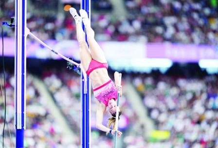
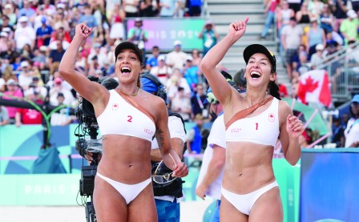

撑竿跳选手纽曼周三为加拿大夺得一枚铜牌。（加新社）

加拿大选手帕雷德斯(右）和威尔克森周三在女子沙滩排球八强赛中，击败西班牙队闯入准决赛。（加新社）
巴黎奥运周三进入第12天，本国选手在女子撑竿跳获得一面铜牌，令加拿大奖牌总数增至19面，以6金4银9铜在奖牌榜保住第11位。
来自安省特拉华（Delaware）的30岁女子撑竿跳选手纽曼（Alysha Newman），以4.85米的成绩摘铜，并刷新了加拿大的纪录。
这也是继本国选手在男女链球项目包揽冠军之后，加拿大在本届奥运会上获得的第3枚田径奖牌。
纽曼是112年以来再次取得女子撑竿跳奥运奖牌的加拿大选手。上次加拿大在女子撑竿跳项目夺得奖牌还是在1912年的斯德哥尔摩奥运，当年加拿大选手哈尔彭尼（William Halpenny）赢得铜牌。
澳洲选手肯尼迪（Nina Kennedy）以4.90米的成绩取得金牌，美国选手穆恩（Katie Moon）以4.85米摘银，她与纽曼成绩相同，但少跳一次。
不过，本国在其他田径项目陆续失利。
29岁的加国飞人德格拉斯（Andre De Grasse）在男子200米准决赛中获得20.41秒的成绩，未能进入决赛。这名6枚奥运奖牌得主在东京奥运会上曾以19秒62秒的个人最佳成绩夺得金牌。
来自安省万锦的德格拉斯早前在男子100米准决赛亦遭淘汰，这是他运动生涯中首次同时未能进入奥运100米、200米和4×100米接力3项比赛的决赛。
同来自安省的33岁跑手艾哈迈德（Mo Ahmed）在男子5,000米初赛跑至最后400米时，排名前7名的他被前面一名跑手绊倒。艾哈迈德最终以14分15秒76秒的成绩获得第16名。
艾哈迈德在东京奥运会的同一项目中曾经赢得银牌。他于上周五在男子10,000米项目获得第4名。
来自多伦多的帕雷德斯（Melissa Humana-Paredes）和威尔克森（Brandie Wilkerson），在女子沙滩排球八强赛中直落两局击败西班牙，准决赛将会跟瑞士对阵。
至于场地单车项目方面，来自魁省的吉尼斯特（Lauriane Genest）和来自阿省的米切尔（Kelsey Mitchell）在女子凯林赛（Keirin）复活赛胜出，成功晋级。
来自斯高沙省的拉塞尔（Michelle Russell）和梅兰森（Riley Melanson）在女子500米个人独木舟短途赛取得准决赛资格。